The Agent Swarm System provides multi-agent AI consultation capabilities for cryptocurrency analysis and trading advice. This system enables users to interact with specialized AI consultants through a natural language interface, with each consultant having deep expertise in specific cryptocurrencies and access to comprehensive technical analysis tools.
This document covers the agent coordination architecture, specialized consultant implementations, and tool ecosystem. For information about the core trading logic that agents can analyze, see AI Trading Engine. For details about the mathematical analysis services that power agent tools, see Mathematical Analysis Services.
The Agent Swarm System operates as a multi-layered architecture with centralized coordination, intelligent routing, and specialized domain expertise.

The RootSwarm serves as the central coordinator for all agent interactions, managing the flow of conversations between users and specialized consultants.
The TriageAgent acts as the intelligent router that determines user intent and directs conversations to appropriate specialists.
| Property | Value |
|---|---|
| Agent Name | AgentName.TriageAgent |
| Completion | CompletionName.HfStreamCompletion |
| Max Tool Calls | 1 |
| Keep Messages | 10 |
| Language | Russian |
The triage agent analyzes user queries to identify cryptocurrency interest and routes accordingly:

All consultant agents share a unified architecture with cryptocurrency-specific specialization:
| Property | Common Value |
|---|---|
| Completion | CompletionName.HfStreamCompletion |
| Max Tool Calls | 1 |
| Keep Messages | 25 |
| Language | Russian |
Each consultant agent provides real-time market context through systemDynamic functions:

| Agent | Symbol | systemDynamic Function |
|---|---|---|
| BtcConsultantAgent | BTCUSDT | getMarketPrice("BTCUSDT") |
| EthConsultantAgent | ETHUSDT | getMarketPrice("ETHUSDT") |
| BnbConsultantAgent | BNBUSDT | getMarketPrice("BNBUSDT") |
| XrpConsultantAgent | XRPUSDT | getMarketPrice("XRPUSDT") |
| SolConsultantAgent | SOLUSDT | getMarketPrice("SOLUSDT") |
Each consultant agent has access to a comprehensive suite of technical analysis tools:
| Tool Category | Tool Names | Purpose |
|---|---|---|
| Multi-Timeframe Signals | FetchShortTermRangeSignalsFetchSwingTermRangeSignalsFetchLongTermRangeSignals |
15m, 30m, 1h technical analysis |
| Market Microstructure | FetchVolumeDataFetchSlopeDataFetchWhaleData |
Volume, momentum, institutional activity |
| Social Intelligence | FetchMastodonNewsFetchTwitterNews |
Social sentiment analysis |
| Historical Context | FetchLongTermHistoryFetchShortTermHistoryFetchSwingTermHistory |
Historical pattern analysis |
| Candle Analysis | FetchHourCandleHistoryFetchThirtyMinuteCandleHistoryFetchFifteenMinuteCandleHistoryFetchOneMinuteCandleHistory |
Multi-timeframe candlestick data |

The agent swarm utilizes a sophisticated AI inference system that allows runtime model selection through the InferenceMetaService.
| Provider | Models | IDs |
|---|---|---|
| HuggingFace | openai/gpt-oss-120bdeepseek-ai/DeepSeek-R1deepseek-ai/DeepSeek-V3 |
0, 1, 2 |
| xAI Grok | grok-3grok-3-mini |
3, 4 |
| Ollama | gpt-oss:120bdeepseek-r1:671bdeepseek-v3:671b |
5, 6, 7 |

The InferenceMetaService.getActiveInference() method implements the selection logic:
isInferenceSelection0 through isInferenceSelection7INFERENCE_LISTThe Agent Swarm System integrates seamlessly with the core trading infrastructure, enabling agents to provide analysis using the same mathematical services that power automated trading decisions.

This shared architecture ensures consistency between manual agent consultations and automated trading decisions, as both systems utilize identical technical analysis calculations and market data sources.
The Agent Swarm System implements comprehensive error handling through callback mechanisms:
onToolError callbacks log errors to ./tool_error.txtAll consultant agents include NavigateToTriageTool for returning to the central router when: